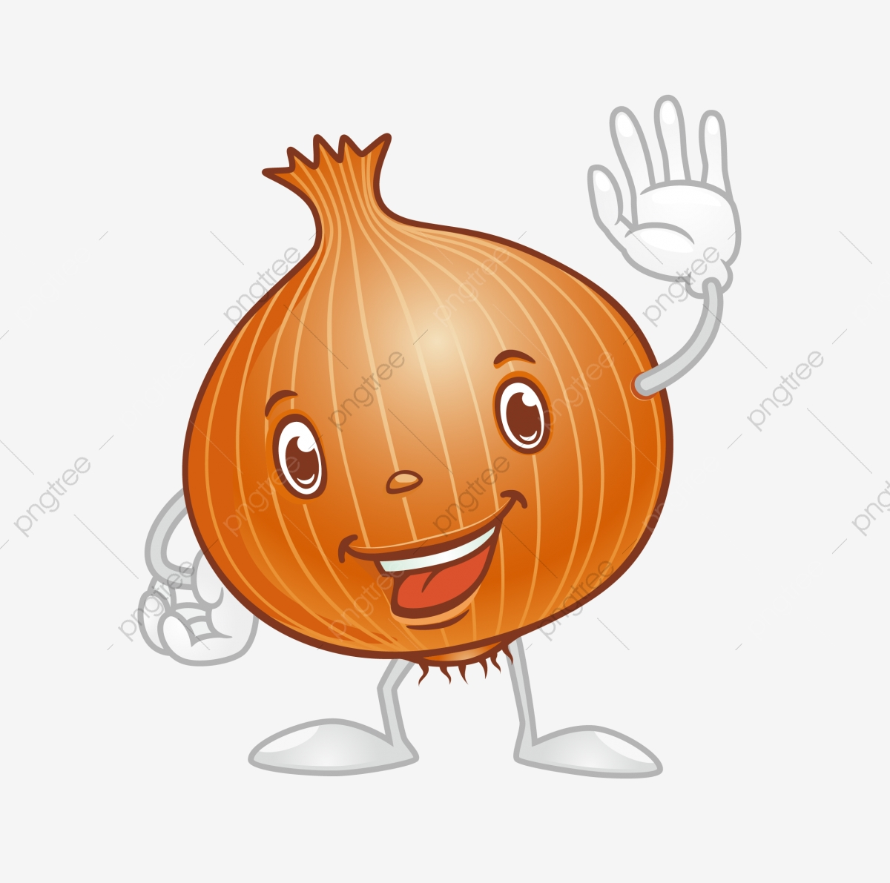

Onion
a programer.



onion
The onion also known as the bulb onion or common onion
medicine
Onions contain antioxidants and compounds that fight inflammation, decrease triglycerides and reduce cholesterol levels
onine usage
When added to the hair and scalp, onion juice can provide extra sulfur to support strong and thick hair
side affects
People with onion allergies may experience red, itchy eyes and rashes